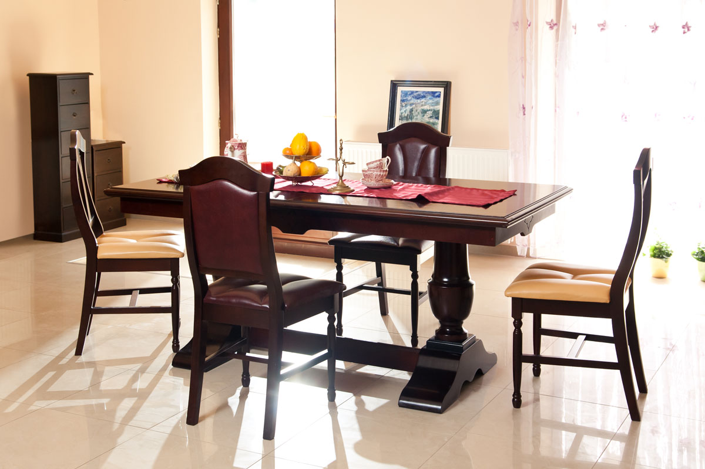

Sufragerie IKEA - IKEA
 Treci la conţinutul principal IKEA Produse Camere Noutăţi Idei Oferte speciale IKEA Caută Produse Camere Noutăţi Idei Oferte speciale Profilul meu Urmărește comanda IKEA Family IKEA for Business Livrare Despre magazin Contactează-ne Produse Noutăţi Mobilier Soluţii depozitare Bebeluşi şi copii Mobilier pentru exterior Paturi şi saltele Bucătării şi electrocasnice Accesorii pentru bucătărie şi veselă Produse pentru baie Textile Covoare şi covoraşe Corpuri de iluminat Decoraţiuni Plante şi ghivece Accesorii pentru curățenie și rufe Amenajarea locuinţei Electronice pentru casă Siguranța Mâncare şi băutură Animale de companie Timp liber şi produse pentru siguranţă IKEA home smart Pentru vară Camere Dormitor Camera de zi Bucătărie Sufragerie Camera copiilor Baie Biroul de acasă Hol Exterior Vizualizate recent Schimbă țara Acasă Camere SufragerieSufragerie
Scaune sufragerie Mese pentru sufragerie Seturi sufragerie Bufete şi mese consolă Mese și scaune pentru bar Taburete & bănciSufrageria ta’nu presupune doar luatul mesei; astăzi este locul’unde poți face orice dorești, de la efectuarea temelor la joacă. Așa că vino să vezi tot ce ai nevoie pentru realizarea unui spațiu pentru luat masa, pentru relaxare, pentru distracție sau pentru muncă - toate în locul unde-ți petreci timpul.
Preferatele noastre
Skip listing RÖNNINGE Masă extensibilă 155/210x90x75 cm 999 lei INGOLF Scaun 179 lei (80) Mai multe opțiuni INGATORP Masă extensibilă 110/155 cm 1.299 lei (96) Mai multe opțiuni JOKKMOKK Masă + 4 scaune 529 lei (50) TERJE Scaun pliant 59 , 90 lei (97) Mai multe opțiuni EKEDALEN Scaun 199 lei (11) Nou INGOLF Scaun 229 lei (80) Mai multe opțiuni MELLTORP Masă 149 leiUn stil clasic, un preţ imbatabil şi rezistenţă
A fost important pentru noi să realizăm o masă pentru oameni care se află în diferite situaţii. Am lucrat cu detaliile, de exemplu spaţiul dintre cadru şi blat, pentru a face acest design unic.
INGATORP Masă extensibilă 1.299 leiSuprafaţă lăcuită
Dimensiunile mesei se adaptează uşor şi rapid nevoilor tale. Cu extensia suplimentară de sub tăblie masa se extinde pentru 4-6 persoane. Funcţie de blocare mascată pentru a preveni crearea de spaţiu între blat şi extensie şi pentru a fixa la locul său extensia.
Extensia suplimentară se poate depozita sub blat.
Vezi toate mese pentru sufragerieIdei IKEA
Explorează ideile pentru amenajarea locuinţei, inspiră-te şi creează!
Aranjează masa pentru vară
Organizează o petrecere veselă
Aranjament de iarnă pentru masă
Un aranjament de masă simplu dar frumos
5 sfaturi esenţiale pentru o masă de sărbătoare
Găseşte stilul care te defineşte.
Idei IKEA | SufragerieLivrare
Livare pentru orice fel volum de cumpărturi, mare sau mic.
Despre livrareAsamblare mobilier
Echipa noastră poate asambla mobilierul IKEA la tine acasă.
Despre asamblarePlanificare online
Planifică de acasă, ajutat de un specialist IKEA.
Programare aiciModalităţi de plată
Finanţare adaptată nevoilor tale, la fel ca mobilierul.
Click & Collect
Comandă online, ridică din magazin/punctele de colectare.
Înapoi la început PartajeazăPinterest Facebook Twitter Copiază link-ul